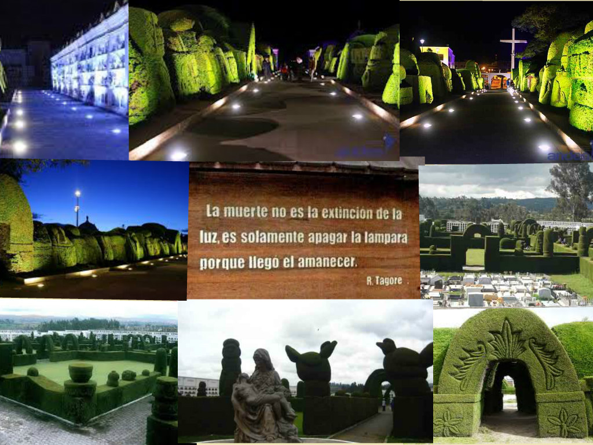
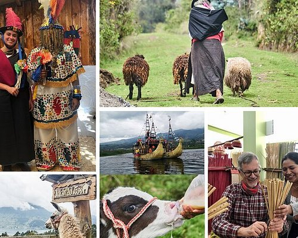
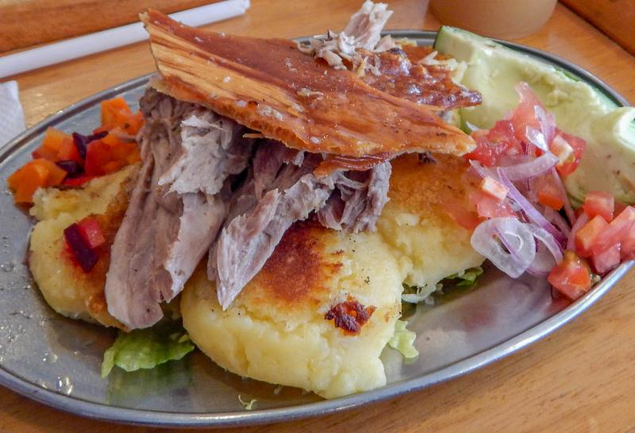
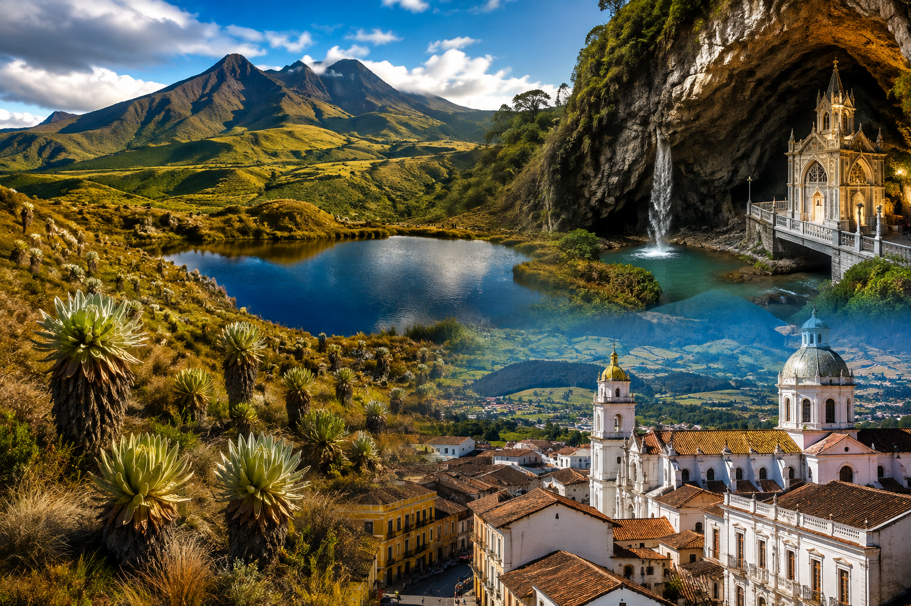

Tour Cultural Tulcán Patrimonial
Visita guiada de 1 día al Cementerio Topiario José María Azael Franco, museos locales y monumentos urbanos.
$25.00 / persona
Reservar Ahora
Visita guiada de 1 día al Cementerio Topiario José María Azael Franco, museos locales y monumentos urbanos.
$25.00 / persona
Reservar Ahora
Excursión de aventura al páramo de frailejones en Tufiño con relajación en aguas termales y refrigerio autóctono.
$45.00 / persona
Reservar Ahora
Experiencia culinaria probando el auténtico hornado carchense, quesos de la región, cumbalazo y amasados tradicionales.
$30.00 / persona
Reservar Ahora
Incluye hospedaje, transporte turístico privado, desayunos, visitas al Cementerio, Páramo de Chiles y Gruta de la Paz.
$140.00 / persona
Reservar Ahora